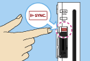

Cuando uses la Wii Balance Board durante un juego, sigue el procedimiento a continuación.
Si la Wii Balance Board ha sido sincronizada en el modo estándar
En los modos de juego para un jugador podrás controlar tu mono con la Wii Balance Board además de con el Wii Remote.
Para activar la Wii Balance Board utiliza el icono de la Wii Balance Board que aparece en la parte superior de todas las pantallas del menú para un jugador y sigue las instrucciones.

Nota: Si notas un funcionamiento anormal durante el juego, llama al número de servicio al consumidor de Nintendo 1-800-255-3700 o visita la página support.nintendo.com.
Antes de que comience la ronda, se te pedirá que calibres la Wii Balance Board. Una vez más deberás seguir las instrucciones de pantalla. Después de calibrarla, no saltes ni te bajes de la Wii Balance Board hasta que termine la ronda. Si lo haces, habrá que realizar de nuevo la calibración.
Cuando estés jugando y te inclines en la Wii Balance Board, tu mono esquivará en la misma dirección.
Si la Wii Balance Board no ha sido sincronizada en el modo estándar

- Cuando se muestre la pantalla de la derecha, quita la tapa del compartimento de las pilas ubicado en la parte inferior de la Wii Balance Board y mantén oprimido
 .
.
 El indicador de encendido se iluminará de manera intermitente.
El indicador de encendido se iluminará de manera intermitente.
- Al quitar la tapa de las pilas, hazlo con cuidado para evitar lesionarte los dedos o que la Wii Balance Board caiga sobre tus pies.
- Cerciórate de insertar correctamente las pilas en la Wii Balance Board.
- Cuando el indicador de encendido comience a parpadear, quita tu dedo de .

- Abre la tapa de la ranura para tarjetas SD que se encuentra en la parte frontal de la consola Wii y oprime
 en la consola mientras el indicador de encendido de la Wii Balance Board esté parpadeando. El indicador de encendido dejará de parpadear y se iluminará por completo una vez que la sincronización mediante el modo estándar se haya completado.
en la consola mientras el indicador de encendido de la Wii Balance Board esté parpadeando. El indicador de encendido dejará de parpadear y se iluminará por completo una vez que la sincronización mediante el modo estándar se haya completado.
- Una vez que el proceso de sincronización haya terminado, vuelve a colocar la tapa de las pilas en la Wii Balance Board y cierra la tapa de la ranura para tarjetas SD.
 |
 |
 |
 |
- Solamente se puede sincronizar una Wii Balance Board a una consola Wii a la vez. Hasta 10 controles Wii Remotes y accesorios pueden ser sincronizados con una consola en cualquier momento mediante el procedimiento de sincronización estándar. Si se ejecutan sincronizaciones posteriores, se perderán los datos de sincronización de los controles Wii Remote más antiguos, pero los datos de sincronización de la Wii Balance Board serán retenidos.
- Solamente se puede sincronizar una Wii Balance Board a una consola Wii mediante el procedimiento de sincronización estándar. Necesitarás repetir el procedimiento de sincronización si cambias la consola que se encuentra sincronizada con la Wii Balance Board.
- La Wii Balance Board usa la conexión del Jugador 4 (J4). Si un control Wii Remote se encuentra usando la conexión J4, entonces ese control será desconectado mientras la Wii Balance Board se encuentre en uso.
|
 |
 |
 |
 |